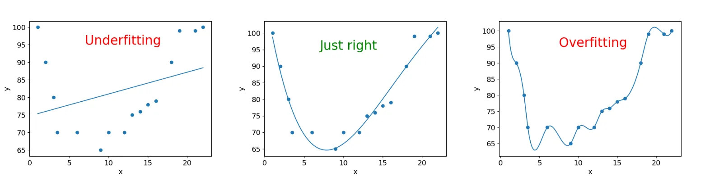
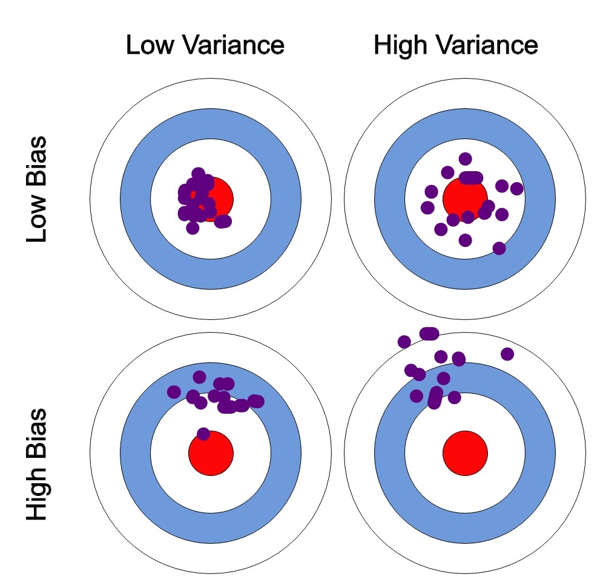
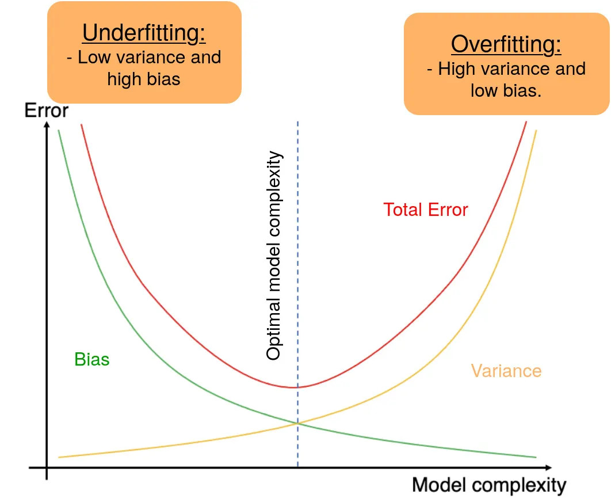
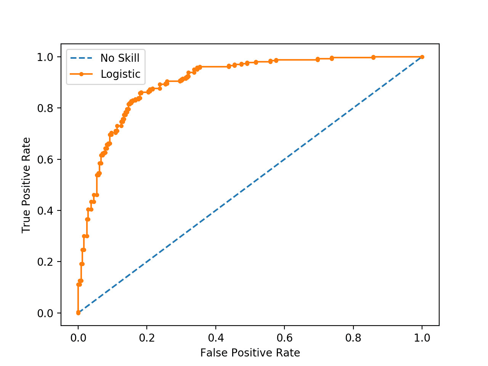
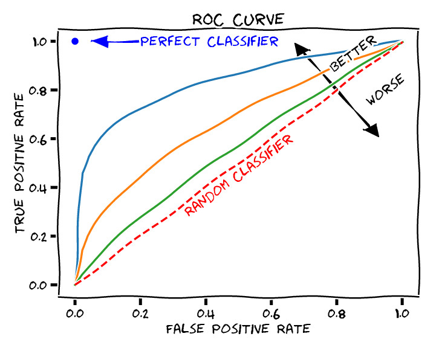

6 Medidas de rendimiento
Las medidas de rendimiento de un modelo de ML serán fundamentales para poder considerar que dicho modelo cumple con los requisitos establecidos al inicio del proyecto. Existe un principio fundamental en el análisis de datos que podríamos simplificar así:
\[DATOS = MODELO + ERROR\]
Los datos representan la realidad (procesos de negocios, clientes, productos, actividades, fenómenos físicos, etc.) que se quiere comprender, predecir o mejorar.
El modelo es una representación simplificada de la realidad que proponemos para describirla e interpretarla más fácilmente.
El error refleja la diferencia entre nuestra representación simplificada de la realidad (el modelo) y los datos que relamente describen esa realidad de forma precisa.
Una vez elegido el modelo, o modelos de ML que vamos a emplear para analizar nuestros datos, y una vez que hemos entrenado dichos modelos sobre un conjunto de datos (empleando los algoritmos adecuados) surge la tarea de evaluar el rendimiento del modelo. Dentro del ciclo de vida de un proyecto de ciencia de datos (ver Figura 1.2 (b)) nos encontramos en la etapa de “Evaluar y criticar el modelo”. Podemos decir que estamos en la etapa de establecer si el error es aceptable o, por contra, es demasiado alto y no podemos aceptar el modelo como útil. En ese último caso, debemos buscar un modelo más preciso o que cometa un error asumible.
En modelos de ML, se utilizan diferentes medidas de rendimiento para evaluar el comportamiento del modelo, y para llevar a cabo la comparación y evaluación de los modelos empleados.
6.1 Complejidad de un modelo
Cuando incrementamos la información (en forma de variables o combinación de las mismas) con la que se entrena el modelo, el error casi siempre suele reducirse, lo cual es bueno (¡a primera vista!). Sin embargo, cuantas más variables de entrada tengamos en el modelo más complicado se vuelve. Esto no es tan bueno por dos motivos fundamentales:
Principio de parsimonia: Preferimos modelos sencillos y fáciles de explicar, a modelos complicados. Este principio también es conocido como “navaja de Occam”.
Pérdida de generalidad: Si añadimos demasiados parámetros de entrada a un modelo es posible representar exactamente la información de los datos de entrenamiento, pero es muy probable que el modelo sea pésimo para nuevos datos. Es lo que se conoce como sobreajuste (“overfitting” en inglés).
“Todos los modelos están equivocados, pero algunos son útiles”
La figura siguiente muestra, con un ejemplo, los conceptos de bajoajuste, y sobreajuste:

El fundamento de cualquier proyecto de ML es acabar con un modelo que funcione bien en datos no vistos. El underfitting, o bajoajuste, se produce cuando un modelo es demasiado simple para capturar la complejidad de los datos subyacentes. En otras palabras, el modelo no se ajusta lo suficiente a los datos de entrenamiento y no puede hacer predicciones precisas tanto en los datos de entrenamiento como en los datos de prueba. Esto suele ocurrir cuando se utiliza un modelo demasiado básico o se aplican suposiciones demasiado restrictivas sobre la relación entre las variables.
Por otro lado, el overfitting, o sobreajuste, se produce cuando un modelo es demasiado complejo y se ajusta demasiado “bien” a los datos de entrenamiento. Esto significa que el modelo no solo captura los patrones reales en los datos, sino también el ruido aleatorio o las peculiaridades únicas de los datos de entrenamiento (no generalizables). Como resultado, el modelo tiene un rendimiento excelente en los datos de entrenamiento pero un rendimiento deficiente en los datos de prueba no vistos.
6.2 Balance Sesgo-Varianza
El equilibrio entre sesgo (“bias” en inglés) y varianza es un concepto fundamental en ML que afecta directamente al rendimiento de los modelos. Estos dos conceptos son opuestos y encontrar el equilibrio (balance) adecuado entre ellos es esencial para construir modelos eficaces y con alta capacidad de generalización.
Sesgo: El sesgo se refiere a la simplificación excesiva de un modelo, asumiendo que los datos de entrenamiento siguen una cierta estructura o patrón predefinido.
Un modelo con alto sesgo tiende a subajustar los datos y no captura la complejidad subyacente en los mismos.
Esto puede resultar en un rendimiento deficiente tanto en los datos de entrenamiento como en los datos de prueba, ya que el modelo no puede representar adecuadamente la relación entre las variables.
Varianza: La varianza se relaciona con la sensibilidad excesiva de un modelo a las fluctuaciones en los datos de entrenamiento.
Un modelo con alta varianza se ajusta demasiado a los datos de entrenamiento, capturando incluso el ruido aleatorio en los datos.
Aunque puede tener un rendimiento excelente en los datos de entrenamiento, tiende a generalizar mal en nuevos datos, lo que resulta en un rendimiento deficiente en los datos de prueba.
El objetivo en el ML es encontrar un equilibrio entre estos dos extremos:
Un modelo con sesgo alto y varianza baja es más simple y tiende a subajustar los datos. Puede ser adecuado cuando se dispone de pocos datos o cuando se prioriza la interpretabilidad del modelo.
Un modelo con sesgo bajo y varianza alta se ajusta muy bien a los datos de entrenamiento pero generaliza mal. Puede ser útil cuando se dispone de una gran cantidad de datos y se busca la máxima precisión.
El equilibrio adecuado se encuentra al ajustar la complejidad del modelo y la cantidad de datos disponibles. Esto se logra mediante técnicas como la selección de características, la regularización y la validación cruzada.

Normalmente, a medida que aumenta la complejidad del modelo, se observa una reducción del error debido a un menor sesgo del modelo. Sin embargo, esto sólo ocurre hasta cierto punto. A medida que aumente la complejidad del modelo, acabará sobreajustándolo y, por tanto, su varianza empezará a ser elevada. Por lo tanto, una disminución del sesgo del modelo aumenta la varianza y viceversa, lo que nos lleva al concepto de balance, es decir, tenemos que llegar a un compromiso en ambos extremos. Un modelo ideal es el que tiene una varianza y un sesgo pequeños.

6.2.0.1 Evitar el sobreajuste
A continuación te explicaremos algunas técnicas para conseguir evitar el problema del sobreajuste. Despliega los paneles siguientes para obtener más información.
Obtener más datos de entrenamiento puede ayudar a reducir el riesgo de sobreajuste. Cuanto más datos tengas disponibles, más probable es que el modelo aprenda patrones reales en lugar de ruido.
Utiliza técnicas de validación cruzada, como la validación cruzada \(k\)-fold, para evaluar el rendimiento del modelo en diferentes subconjuntos de datos de entrenamiento y prueba. Esto puede ayudar a identificar si el modelo está sobreajustando en una sola partición de los datos. Ver Capítulo 2 para una completa descripción.
Aplica técnicas de regularización como la regularización L1 (Lasso) y L2 (Ridge) para penalizar los coeficientes de las características menos importantes. Esto ayuda a simplificar el modelo, eliminando parámetros del modelo, y evitar que se ajuste demasiado a los datos. Es probable que estudies estas técnicas en asignaturas de cursos más avanzados.
Elimina características irrelevantes o redundantes que no contribuyan significativamente a la capacidad predictiva del modelo. Una menor dimensionalidad puede reducir el riesgo de sobreajuste.
Considera modelos más simples con menos parámetros, como regresiones lineales en lugar de modelos polinómicos complejos. Los modelos simples tienden a tener menos probabilidad de sobreajuste.
En modelos de redes neuronales, el dropout es una técnica que consiste en apagar aleatoriamente una fracción de las neuronas durante el entrenamiento. Esto evita que las neuronas se vuelvan demasiado dependientes entre sí y reduce el riesgo de sobreajuste.
Tal y como te explicamos en el Capítulo 2, divide tus datos en tres conjuntos: entrenamiento, validación y prueba. Utiliza el conjunto de validación para ajustar los hiperparámetros del modelo y el conjunto de prueba solo para la evaluación final.
Controla regularmente el rendimiento del modelo en el conjunto de prueba durante el entrenamiento. Si el rendimiento en el conjunto de prueba comienza a empeorar mientras mejora en el conjunto de entrenamiento, es una señal de posible sobreajuste.
Combina múltiples modelos juntos, como Random Forests o Gradient Boosting, que pueden reducir el riesgo de sobreajuste al promediar las predicciones de varios modelos. Trataremos estas técnicas en el Capítulo 7.
6.3 Métricas de evaluación
Desde un punto de vista práctico, dado un modelo de ML entrenado mediante un algoritmo sobre un conjunto de datos, nuestra primera pregunta va a ser ¿cómo de eficaz es el modelo para representar los datos?
En otras palabras, la primera consideración a tener en cuenta sobre el rendimiento de un modelo de ML es si la estimación del error es precisa. Hemos de considerar si los estimadores de los parámetros del modelo son precisos, y si todas las variables empleadas para su construcción son necesarias y suficientes. Deberemos comparar nuestro modelo, en sus diferentes versiones (resultantes de diferentes valores de los parámetros), con otros modelos alternativos. Así mismo, planteamos la evaluación del modelo sobre conjuntos de datos diferentes a aquellos sobre los que ha sido entrenado, para medir su capacidad de generalización. Tal y como venimos indicando, hemos de tener en cuenta que el modelo de ML se ajusta sobre un conjunto de datos de entrenamiento. Al ser probado sobre nuevos conjuntos de datos (prueba y validación), los resultados serán necesariamente diferentes. Tal y como hemos visto anteriormente, si el modelo se ajusta con excesiva precisión sobre los datos de entrenamiento, corremos el riesgo de sobreajuste. Por contra, si el modelo es demasiado simple, el error posiblemente sea elevado y el modelo, por tanto, de baja utilidad. Buscaremos un equilibrio, modelos parsimoniosos, con baja complejidad, pero alto rendimiento, y gran capacidad de generalización.
Para evaluar la bondad de ajuste de un modelo, vamos a diferenciar entre modelos de clasificación y modelos de regresión. En cualquier caso, para una observación concreta, el error siempre vendrá determinado por la diferencia (medida mediante alguna métrica) entre el valor observado de la variable respuesta en la observación y el valor estimado (o predicho) por el modelo de aprendizaje.
\[error_i \propto target \space observado_i - target \space predicho_i\]
6.3.1 Métricas para Regresión
Un modelo de regresión es una técnica estadística que se utiliza para analizar la relación entre una variable dependiente (respuesta) y una o más variables independientes (predictores). El objetivo principal de un modelo de regresión es comprender cómo las variables independientes afectan o explican la variabilidad en la variable dependiente y, en última instancia, utilizar esta comprensión para hacer predicciones o inferencias. La diferencia entre las predicciones para los datos observados en la muestra de entrenamiento y el propio valor de la variable dependiente en dichos datos será una medida del error.
En el contexto de modelos de regresión, existen varias métricas comunes para evaluar el error del modelo y determinar su calidad de ajuste a los datos. Algunas de las métricas más utilizadas incluyen las siguientes:
Error Cuadrático Medio (Mean Squared Error, MSE): El MSE es una métrica que calcula el promedio de las diferencias al cuadrado entre las predicciones del modelo y los valores reales. Es especialmente sensible a los errores grandes debido al término de cuadrado. Cuanto menor sea el MSE, mejor será el ajuste del modelo:
\[MSE = \frac{1}{N}\sum_{i=1}^N (y_i-f(x_i))^2\],
donde \(y_i\) es el valor de la variable objetivo en la observación \(x_i\) con \(i=1,\ldots,N\), y \(f(x_i)\) es el valor predicho por el modelo de ML que se ha entrenado.
Error Absoluto Medio (Mean Absolute Error, MAE): El MAE es similar al MSE, pero en lugar de cuadrar los errores, toma el valor absoluto de cada error y calcula el promedio. Es menos sensible a los errores extremos en comparación con el MSE.
\[MAE = \frac{1}{N}\sum_{i=1}^N |y_i-f(x_i)|\].
Raíz del Error Cuadrático Medio (Root Mean Squared Error, RMSE): El RMSE es, simplemente, la raíz cuadrada del MSE. Ofrece una medida del error en la misma unidad que la variable objetivo, lo que facilita su interpretación.
Coeficiente de Determinación (R-squared, \(R^2\)): El \(R^2\) es una métrica que proporciona una medida de la proporción de la variabilidad en la variable dependiente que es explicada por el modelo. Un \(R^2\) más alto indica un mejor ajuste del modelo a los datos, con un valor máximo de \(1\).
\[R^2 = \frac{\sum_{i=1}^N (f(x_i)-\bar y)^2}{\sum_{i=1}^N (y_i-\bar y)^2}\],
donde \(\bar y\) es el valor medio de la variable objetivo.
Error Porcentual Absoluto Medio (Mean Absolute Percentage Error, MAPE): El MAPE calcula el porcentaje promedio de error absoluto en relación con los valores reales. Es útil para comprender el error relativo en lugar del error absoluto.
\[MAPE = \frac{100}{N}\sum_{i=1}^N |\frac{y_i-f(x_i)}{y_i}|\].
La elección de la métrica adecuada depende del tipo de problema que se esté abordando y de los objetivos específicos de modelado. Por ejemplo, si estás interesado en comprender la precisión de las predicciones en términos absolutos, elige métricas como MSE o MAE. Si prefieres evaluar el rendimiento relativo, considera métricas como \(R^2\) o MAPE. Es importante seleccionar la métrica que mejor se alinee con tus necesidades y contexto de aplicación.
6.3.2 Métricas para Clasificación
Tal y como veremos en el Capítulo 7, los modelos de clasificación son una parte importante de las técnicas de ML. El objetivo de dichos modelos es hacer una división perfecta en diferentes clases, previamente definidas en base a las etiquetas de la variable respuesta. En este capítulo nos centramos en la más popular de todos los tipos de clasificación: la clasificación binaria. De hecho, cuando nos enfrentamos a un problema de clasificación multiclase una de las soluciones más habituales es convertirlo en varios problemas de clasificación binaria usando una de las clases como clase de referencia.
El propósito de la clasificación binaria es dividir las observaciones dadas en dos clases mutuamente excluyentes {-1,+1}. La elección de la métrica de evaluación del rendimiento de un modelo es relevante, ya que se utilizará para seleccionar o descartar los modelos de clasificación. En general, este conjunto de métricas se obtiene de la matriz de confusión que enfrenta las clases observadas y las predicciones realizadas por el modelo de ML.
Definimos la matriz de confusión asociada a los valores predichos por un clasificador como:
| Valor observado | |||
|---|---|---|---|
| -1 | +1 | ||
| Valor Predicho | -1 | TN | FN |
| +1 | FP | TP |
Los elementos de la matriz de confusión son:
- TP: “True positive” o verdaderos positivos, corresponde con las observaciones \(1\) clasificadas efectivamente como \(1\).
- TN: “True negative” o verdaderos negativos, corresponde con las observaciones \(-1\) clasificadas efectivamente como \(-1\).
- FP: “False positive” o falsos positivos, corresponde con las observaciones \(-1\), que son erróneamente clasificadas como \(1\).
- FN; “False negative” o falsos negativos, corresponde con las observaciones \(1\), que son erróneamente clasificadas como \(-1\).
Es muy importante recalcar que la importancia relativa de los dos errores (FP y FN) depende del problema que estemos considerando. Por ejemplo, en un estudio de control de accesos, un FP significa dejar entrar a una persona que debería de haber sido detenida, mientras que un FN significa no dejar entrar a una persona a la que se debería de haber permitido el paso. Si estamos en un entorno de seguridad restringida, es claro que el error FP es mucho más crítico que el error FN. Sin embargo, la respuesta sobre qué error es más relevante no es única y depende fuertemente del contexto.
Por ejemplo, ¿qué es más costoso para un sistema de detección de intrusiones, levantar falsas alarmas al detectar como anomalías situaciones que no lo son, o clasificar como normal una anomalía potencialmente peligrosa?
A continuación, definimos las métricas de rendimiento más importantes en base a la matriz de confusión, siendo \(N\) el número total de observaciones consideradas, es decir \(N=TP+TN+FP+FN\):
Exactitud: probablemente la exactitud es una de las medidas de rendimiento más comunes. Representa la proporción de observaciones correctamente predichas, es decir:
\[ Exactitud=\frac{TP+TN}{N} \] Error: recíproco de la exactitud: \[Error=\frac{FP+FN}{N}\]
Sensibilidad: también conocida como Recuperación o Tasa de Verdaderos Positivos puede verse como la probabilidad de que un \(1\) observado sea clasificado efectivamente como \(1\): \[Recuperación=\frac{TP}{TP+FN}\] Especificidad: también conocida Tasa de Verdaderos Negativos puede verse como la probabilidad de que un \(-1\) observado sea clasificado efectivamente como \(-1\): \[ Especificidad=\frac{TN}{TN+FP}\] Precisión: también conocida Valor Predictivo Positivo puede verse como la probabilidad de que acierto cuando se predice un valor \(1\): \[Precisión=\frac{TP}{TP+FP}\] Valor Predictivo Positivo (NPV, del inglés “Negative Predictive Value”): tasa de acierto cuando se predice un valor \(-1\): \[NPV=\frac{TN}{TN+FN}\]
F1-score: media armónica de Precisión y Recuperación: \[F_1-score=2\frac{Precisión*Recuperación}{Precisión+Recuperación}\]
Es una medida que tiene en cuenta tanto el acierto cuando se predice un valor \(1\), como el número de observaciones con etiqueta igual a \(1\) que son correctamente predichas. Sin embargo, no se tienen en cuenta el número de aciertos en la clase \(-1\). Es decir, es una medida que no involucra a los verdaderos negativos (TN). Esta limitación puede ser una ventaja en algunos casos. Sin embargo, en la práctica, los costes de clasificación errónea no suelen ser iguales. En ese caso podemos emplear la siguiente medida de la lista.
F-score generalizado: media armónica ponderada de Precisión y Recuperación:
\[F_\beta=(1+\beta^2) \frac{Precisión*Recuperación}{\beta^2 Precisión+Recuperación}\]
Cuando \(\beta=1\), se tiene la medida anterior: \(F_1-score\). \(F_2\) da el doble de peso a la Recuperación que a la Precisión. Por contra, \(F_{0.5}\) da el doble de peso a la Precisión que a la Recuperación.
6.4 Rendimiento en las particiones
Tal y como se indicó en el Capítulo 2, existen diversas formas de particionar los datos para llevar a cabo las labores de entrenamiento, prueba y validación. En este apartado nos vamos a centrar en realizar la evaluación de un modelo en las diferentes particiones. Para ello vamos a emplear el método de “k-folds”. La muestra de entrenamiento será dividida en \(k\) grupos de entrenamiento. Cada uno de esos grupos queda fuera del entrenamiento una vez y se emplean las observaciones en el grupo para estimar el error. De este modo, se dispone de \(k\) errores, medidos en la muestra de entrenamiento. Podemos calcular una media de los errores, junto con su desviación típica.
6.5 Ajuste de parámetros de modelos de ML
Es común que el científico de datos necesite ajustar los parámetros de más alto nivel de los modelos de ML. Por ejemplo, en una SVM es necesario elegir el kernel y sus parámetros (aprenderás esta técnica de clasificación en asignaturas del próximo curso). En el método de los \(k\) vecinos más cercanos se necesita fijar el número \(k\). En una Regresión Logística, el científico de datos ha de fijar los umbrales de significatividad estadística a partir de los cuales una variable debería (o no) formar parte del modelo. En un Árbol de Decisión, se necesita fijar varios parámetros, como, por ejemplo, la profundidad del árbol, o el número mínimo de observaciones para que un nodo sea considerado como un nodo terminal (lo trataremos en el próximo capítulo de estos apuntes).
Sea como fuere, para ajustar los parámetros de un modelo de ML debemos seleccionar la medida de rendimiento sobre la que comparar dos modelos diferentes. A modo de ejemplo, supongamos un modelo de clasificación basado en los \(k\) vecinos más cercanos, esto es con un único parámetro \(k\). En este caso, el error global es la métrica elegida. Podríamos replicar el experimento de clasificación cambiando el número de vecinos. De este modo, los diferentes modelos de ML corresponden a modelos de \(k\) vecinos más cercanos con diferentes elecciones del parámetro \(k\). La tabla siguiente muestra los resultados para valores de \(k\) entre \(1\) y \(11\):
| Número de vecinos \(k\) | Media (Desv. Std.) |
|---|---|
| 1 | 1,54 (0,33) |
| 2 | 1,75 (0,41) |
| 3 | 1,68 (0,28) |
| 4 | 1,68 (0,35) |
| 5 | 1,70 (0,34) |
| 6 | 1,89 (0,38) |
| 7 | 1,91 (0,36) |
| 8 | 2,12 (0,45) |
| 9 | 2,25 (0,46) |
| 10 | 2,34 (0,34) |
| 11 | 2,33 (0,38) |
En este caso elegimos \(k=1\) como parámetro para el modelo de los \(k\)-vecinos más cercanos al ser el valor asociado con el menor error. Es decir, el modelo quedaría como sigue. El modelo, que veremos en el siguiente tema, funciona como sigue: para cada nueva observación calculamos su vecino más cercano en la muestra de entrenamiento y asignamos a la nueva observación la clase de dicho vecino.
Podemos incluso llevar esta estrategia a su extremo mediante la técnica de “leave-one-out”, que consiste en hacer tantos folds como observaciones. En ese caso obtenemos errores similares. También podemos reducir el número de folds buscando mayor número de observaciones en cada uno de ellos, reduciendo de este modo la varianza en la media de los errores. Por ejemplo, con \(5\) folds los errores, para diferentes elecciones de \(k\) vecinos, son:
| Número de vecinos \(k\) | Media (Desv. Std.) |
|---|---|
| 1 | 1,59 (0,23) |
| 2 | 1,87 (0,32) |
| 3 | 1,78 (0,16) |
| 4 | 1,84 (0,12) |
| 5 | 1,86 (0,25) |
| 6 | 2,05 (0,25) |
| 7 | 2,06 (0,36) |
| 8 | 2,34 (0,20) |
| 9 | 2,33 (0,19) |
| 10 | 2,36 (0,17) |
| 11 | 2,45 (0,20) |
Vemos que, aunque la media de los errores es menor en \(k=1\), una elección como \(k=3\), o \(k=4\) podría tener más sentido al obtener resultados similares con menor variabilidad (menos desviación estándar).
A continuación, deberíamos de probar el modelo en la muestra de prueba (test). Por ejemplo, con \(k=1\) vecino más cercanose obtiene un error similar al esperado, \(1,51\%\). Nótese que en este caso no hay desviación típica, pues es el error en una única partición. Cuando probamos el modelo elegido (\(k=3\)) el resultado sí es algo mejor: \(1,47\%\). Normalmente el modelo del primer vecino más cercano no presenta un buen equilibrio entre el sesgo y la varianza, y elecciones de \(k>1\) suelen ser preferibles (Cover y Hart 1967).
Entonces, cabe plantearse la duda ¿cuál es la solución óptima para este problema? La respuesta es que depende del objetivo y, en este caso, cualquier elección entre \(1\) y \(3\) vecinos parece razonable. Fíjate en la importancia de la medida de distancia elegida. El primer vecino más cercano, es el más cercano según esa media. Una medida diferente conduciría, probablemente, a otro vecino y en consecuencia a otros resultados de rendimiento.
Supongamos que elegimos un modelo de \(k\) vecinos más cercanos con \(k\) igual \(3\). En estos momentos, estaríamos en disposición de llevar el modelo a “producción”. Es decir, si este fuera nuestro modelo elegido habríamos comprobado su buen funcionamiento en datos diferentes a aquellos sobre los que ha sido entrenado. El error esperado para nuevos datos está en torno al \(1,5\%\). Recordemos que aún hemos reservado una partición (validación) para simular este error. La partición de validación, no obstante, sólo debería de ser empleada con un modelo, sólo uno.
- Entrenamos los modelos de ML en la partición de entrenamiento.
- Probamos que el funcionamiento de los modelos elegidos en el entrenamiento es el correcto en la partición de prueba.
- Simulamos el comportamiento en un entorno real del único modelo elegido en la partición de validación o producción.
6.6 Comparación de modelos
La evaluación del modelo de clasificación realizada en los apartados anteriores puede ser extrapolada al resto de modelos de ML que veremos a lo largo del curso. De este modo, tendremos un montón de modelos con un montón de medidas de evaluación (preferiblemente la misma en todos ellos). Nos encontramos con el problema de comparar diferentes modelos de aprendizaje.
Muchos de estos modelos devuelven como salida, para cada observación, la probabilidad de pertenencia a las diferentes clases de la variable respuesta. Por ejemplo, una SVM devuelve la probabilidad de pertenencia según una ecuación que depende de la distancia del nuevo punto al hiperplano separador óptimo. Dada esa probabilidad de clase, podemos asignar las nuevas observaciones a una u otra clase. En el caso de los \(k\) vecinos más cercanos, la probabilidad de pertenencia a uno u otro grupo viene dada por la distribución de frecuencias de las clases de la variable respuesta en los \(k\) vecinos más cercanos. Así, si los \(k\) vecinos pertenecen a la misma clase, la probabilidad de pertenencia predicha será \(1\). Si dos tercios de los vecinos pertenecen a la misma clase, la probabilidad de pertenencia a dicha clase será de \(0,667\), etc.
Lo habitual en problemas de clasificación donde se tienen clases equilibradas (frecuencia parecida de observaciones en las diferentes clases) es tomar como valor de referencia para comparar la probabilidad dada por el modelo el valor \(0,5\). Es decir, si la probabilidad de clase para una nueva observación es mayor que \(0,5\), entonces el modelo predice clase \(+1\), y clase \(-1\) en caso contrario. Pero ese valor, \(0,5\), no es sino otro parámetro de nuestro modelo.
Fíjate que para valores bajos del umbral habrá muchas observaciones clasificadas como \(+1\), probablemente más de las debidas. De este modo, se obtienen valores altos de Sensibilidad y NPV. Es decir, se recuperan la mayoría de las observaciones en la clase \(+1\), pero la Precisión no es tan alta como cuando usamos valores altos de umbral. Por contra, cuando se usan valores altos, habrá pocas observaciones clasificadas como \(-1\), probablemente menos de las debidas. De este modo, se obtienen valores más elevados de Precisión y Especificidad, pero más bajos valores de Sensibilidad.
6.6.1 Curva ROC
Existe un método gráfico para ilustrar la capacidad predictiva de un modelo de Aprendizaje Máquina binario. Se trata de la curva ROC (del inglés “Receiver Operating Characteristic curve”, o curva característica de operación).
Para dibujar la curva ROC se enfrentan la Sensibilidad o Recuperación (TPR), frente a 1 - Especificidad, o tasa de falsos positivos (FPR).
Un ejemplo de una curva ROC aparece en la figura Figura 6.3. Los valores de False Positive Rate y True Positive Rate de cada uno de los puntos de la curva se obtienen de las correspondientes matrices de confusión resultantes de modificar el umbral de decisión de clasificadores binarios. Es decir, se construye un modelo de clasificación que devuelve una probabilidad de clase para cada nuevo punto evaluado. Se establece un umbral. Se obtiene, para la partición correspondiente, la matriz de confusión. Se calculan las métricas de rendimiento y se grafica el punto. Este proceso se repite para una colección de umbrales, uniendo los puntos resultantes de la gráfica. De este modo se consigue la curva ROC.

Es claro que la mejor solución sería aquella que tiene FPR igual a \(0\) y TPR igual a \(1\). En un caso tan ideal, no hay errores de clasificación, la Precisión es perfecta y la Sensibilidad también. Se corresponde con una matriz de confusión diagonal. En el ejemplo presentado en la figura anterior vemos como el modelo de clasificación propuesto no alcanza un rendimiento tan alto en ninguno de los umbrales de decisión.
La curva ROC nos sirve, no sólo para elegir el valor óptimo (el más cercano al ùnto dideal \((0,1)\)), sino para elegir en qué modo de funcionamiento ajustar nuestro modelo. Podemos emplear un modelo con muy alta recuperación (TPR), sacrificando la FPR (baja especificidad), o bien decantarnos por un modelo con baja recuperación y alta especificidad. Lo ideal sería contar con un modelo con valores altos de las dos métricas.
Así mismo, es típico proporcionar el área bajo la curva (AUC, de “Area Under Curve”) como medida resumen de la curva ROC. Un valor de AUC cercano a \(1\) indica un mejor modelo. Valores de AUC próximos a \(0,5\) indican una predicción cercana al azar.
En ocasiones se grafican las curvas ROC de varios modelos simultáneamente con el objeto de realizar comparaciones entre modelos. En principio deberías de elegir aquel modelo con mayor AUC. Sin embargo, no es extraño emplear varios modelos de clasificación en función de la configuración del sistema a predecir. Hay ocasiones en las que las curvas se cruzan. Es decir, una está por encima de la otra en una zona del espacio, y por debajo en otra zona diferente. Si deseamos un modelo con muy alta Especificidad a costa de sacrificar la Sensibilidad, esto es, un modelo que recupere correctamente las observaciones \(-1\) a costa de fallar en algunas de las \(+1\), entonces nos quedaremos con un modelo A. Por contra, si deseamos un modelo con muy alta Especificidad a costa de sacrificar la sensibilidad, esto es, un modelo que recupere correctamente las observaciones \(+1\) a costa de fallar en algunas de las \(-1\), entonces nos quedaremos con un modelo B. El hecho de emplear dos modelos (o más) de ML según el contexto, puede sonar un poco confuso para el científico de datos más novel, pero es algo que, desde un punto de vista meramente matemático, tiene todo el sentido del mundo. A fin de cuentas, se trata de establecer, bajo unas circunstancias determinadas (el contexto), la probabilidad de ocurrencia de un evento. Emplear métodos diferentes según esas circunstancias es algo bastante lógico.
